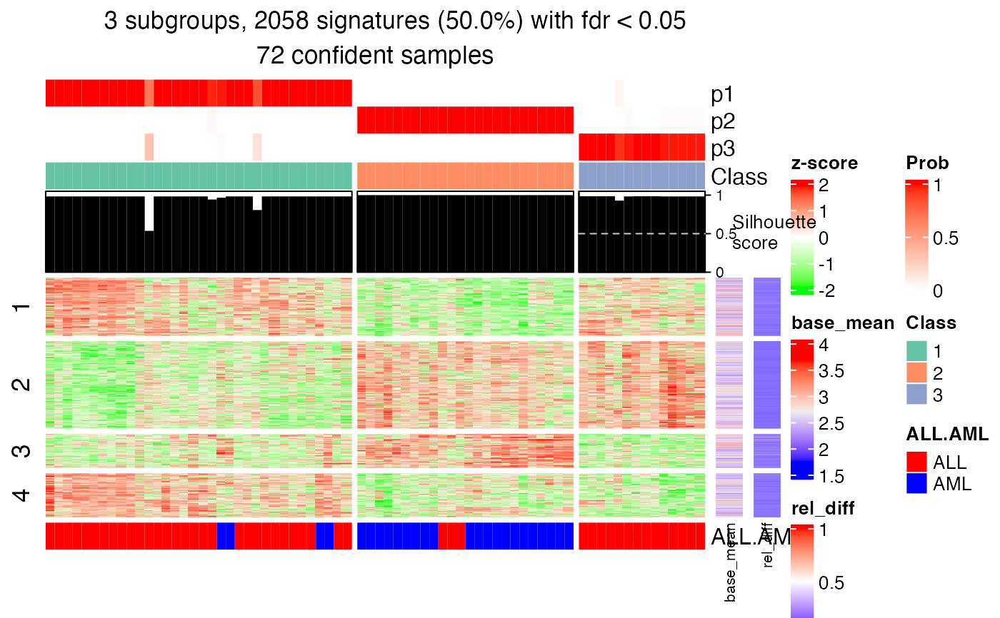
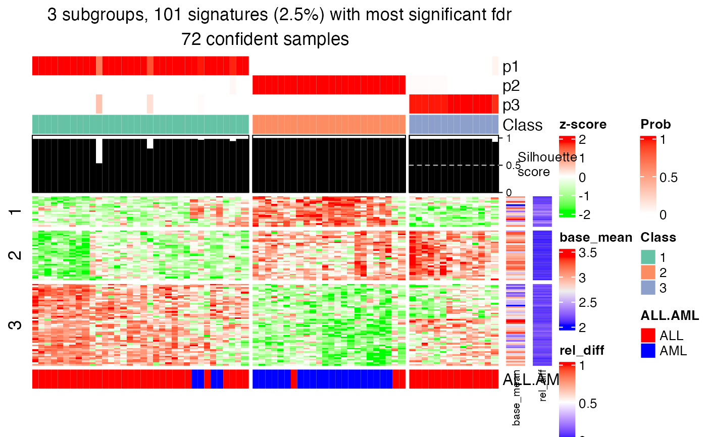

get_signatures-ConsensusPartition-method.RdGet signature rows
# S4 method for ConsensusPartition get_signatures(object, k, silhouette_cutoff = 0.5, fdr_cutoff = cola_opt$fdr_cutoff, top_signatures = NULL, group_diff = cola_opt$group_diff, scale_rows = object@scale_rows, row_km = NULL, diff_method = c("Ftest", "ttest", "samr", "pamr", "one_vs_others"), anno = get_anno(object), anno_col = get_anno_col(object), internal = FALSE, show_row_dend = FALSE, show_column_names = FALSE, use_raster = TRUE, plot = TRUE, verbose = TRUE, seed = 888, left_annotation = NULL, right_annotation = NULL, col = if(scale_rows) c("green", "white", "red") else c("blue", "white", "red"), simplify = FALSE, prefix = "", enforce = FALSE, ...)
| object | A |
|---|---|
| k | Number of subgroups. |
| silhouette_cutoff | Cutoff for silhouette scores. Samples with values less than it are not used for finding signature rows. For selecting a proper silhouette cutoff, please refer to https://www.stat.berkeley.edu/~s133/Cluster2a.html#tth_tAb1. |
| fdr_cutoff | Cutoff for FDR of the difference test between subgroups. |
| top_signatures | Top signatures with most significant fdr. Note since fdr might be same for multiple rows, the final number of signatures might not be exactly the same as the one that has been set. |
| group_diff | Cutoff for the maximal difference between group means. |
| scale_rows | Whether apply row scaling when making the heatmap. |
| row_km | Number of groups for performing k-means clustering on rows. By default it is automatically selected. |
| diff_method | Methods to get rows which are significantly different between subgroups, see 'Details' section. |
| anno | A data frame of annotations for the original matrix columns. By default it uses the annotations specified in |
| anno_col | A list of colors (color is defined as a named vector) for the annotations. If |
| internal | Used internally. |
| show_row_dend | Whether show row dendrogram. |
| show_column_names | Whether show column names in the heatmap. |
| use_raster | Internally used. |
| plot | Whether to make the plot. |
| verbose | Whether to print messages. |
| seed | Random seed. |
| left_annotation | Annotation put on the left of the heatmap. It should be a |
| right_annotation | Annotation put on the right of the heatmap. Same format as |
| col | Colors. |
| simplify | Only used internally. |
| prefix | Only used internally. |
| enforce | The analysis is cached by default, so that the analysis with the same input will be automatically extracted without rerunning them. Set |
| ... | Other arguments. |
Basically the function applies statistical test for the difference in subgroups for every row. There are following methods which test significance of the difference:
First it looks for the subgroup with highest mean value, compare to each of the other subgroups with t-test and take the maximum p-value. Second it looks for the subgroup with lowest mean value, compare to each of the other subgroups again with t-test and take the maximum p-values. Later for these two list of p-values take the minimal p-value as the final p-value.
use SAM (from samr package)/PAM (from pamr package) method to find significantly different rows between subgroups.
use F-test to find significantly different rows between subgroups.
For each subgroup i in each row, it uses t-test to compare samples in current subgroup to all other samples, denoted as p_i. The p-value for current row is selected as min(p_i).
diff_method can also be a self-defined function. The function needs two arguments which are the matrix for the analysis
and the predicted classes. The function should returns a vector of FDR from the difference test.
A data frame with more than two columns:
which_row:row index corresponding to the original matrix.
fdr:the FDR.
km:the k-means groups if row_km is set.
the mean value (depending rows are scaled or not) in each subgroup.
#> * 70/72 samples (in 3 classes) remain after filtering by silhouette (>= 0.5). #> * cache hash: d7b0ab9e8457e94218da8307be387574 (seed 888). #> * calculating row difference between subgroups by Ftest. #> * split rows into 2 groups by k-means clustering. #> * 2076 signatures (50.4%) under fdr < 0.05, group_diff > 0. #> - randomly sample 2000 signatures. #> * making heatmaps for signatures.head(tb)#> which_row fdr mean_1 mean_2 mean_3 group_diff scaled_mean_1 #> 1 2 0.0002185571 1.724614 2.073819 2.025161 0.3492051 -0.5519215 #> 2 3 0.0021344643 2.165184 2.263688 2.407486 0.2423019 -0.4025209 #> 3 11 0.0055215848 2.347884 2.528039 2.360294 0.1801552 -0.3077090 #> 4 12 0.0269779019 2.378765 2.539212 2.315479 0.2237332 -0.1548451 #> 5 13 0.0231658067 2.760360 2.793240 3.391696 0.6313355 -0.2048139 #> 6 17 0.0385593480 2.173987 2.401406 2.310037 0.2274190 -0.3427458 #> scaled_mean_2 scaled_mean_3 km #> 1 0.52395127 0.3740407 1 #> 2 0.06789322 0.7546084 1 #> 3 0.58853214 -0.2459700 1 #> 4 0.47963596 -0.4051056 1 #> 5 -0.15871813 0.6803041 1 #> 6 0.40763038 0.1061578 1#> * 70/72 samples (in 3 classes) remain after filtering by silhouette (>= 0.5). #> * cache hash: b67910623ca6b0285a255b432cf9a022 (seed 888). #> * calculating row difference between subgroups by Ftest. #> * split rows into 3 groups by k-means clustering. #> * 100 signatures (2.4%) with most significant fdr, group_diff > 0. #> * making heatmaps for signatures.